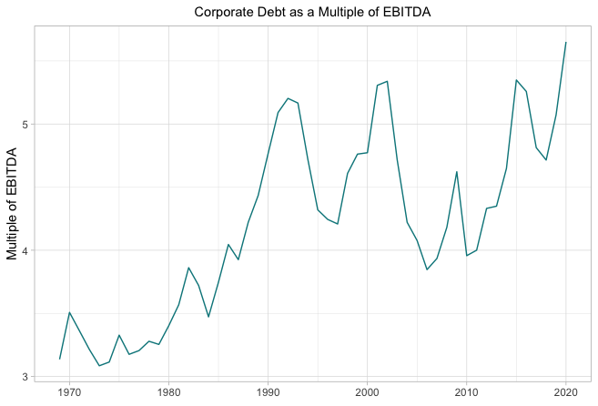
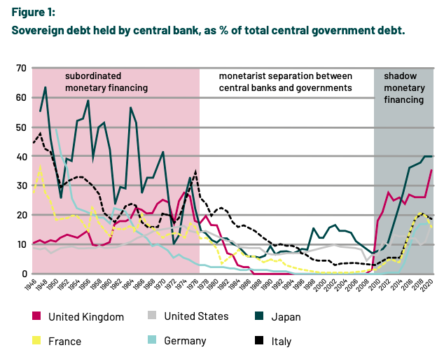
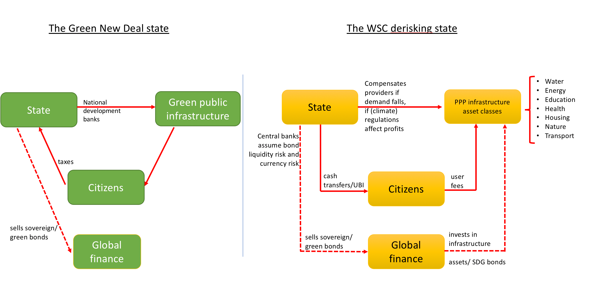
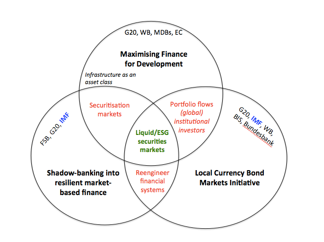

4 Finance
4.1 Global Finance
Fitchner Abstract
The prediction of America’s decline is a regularly recurring phenomenon; this also pertains to the pivotal field of global finance. This article argues that, first we have to consider the United States together with the other Anglophone countries. The English-speaking countries and territories – Anglo-America – have deep common political and socioeconomic roots, of which the unique global Five Eyes intelligence cooperation is merely one manifestation. In finance, New York and London (NY-LON) constitute the decision-making core of this transnational formation. Second, to analyse the highly complex phenomenon of structural power in the globalised international political economy we have to dig deeper to uncover truly meaningful data. Thus, this article evaluates data for nine central segments of global finance from around the year 2000 to 2014. Contrary to the assertions of many declinists, these data show that Anglo-America’s dominant structural power has been persistent during this period. Moreover, four novel visualisations show that the US-UK axis is the fulcrum of the international financial system. However, contemporary global finance is characterised by a high degree of latent fragility; significant imbalances, inequalities and contradictions persist and are even likely to grow, potentially undermining the legitimacy and the stability of the whole system.
Fitchner (2021) Anglo-America’s power in Global Finance (pdf)
4.2 Money
Money is the alienated essence of man’s labour and life; and this alien essence dominates him as he worships it. (Karl Marx)
4.2.1 Institutional Investors
4.2.1.1 ESG 2.0
Segal
How Institutional Investors Encourage Corporations Bad Behavior
Wittingly or unwittingly, pensions and endowments’ investment strategies aid and abet activities that make the financial system more fragile.
The growing scale of institutions and the large amounts of money they need to deploy into high-risk investments is leading to consolidation among asset managers, higher global debt levels, short-term corporate behavior, and market instability.
Institutions’ investment strategies are in conflict with environmental, social, and governance goals to which they are increasingly committing.
Pension funds, insurance companies, sovereign wealth funds and others need to deploy large amounts of capital efficiently because they themselves are so big.
Institutions’ only option in many cases is to put billions of dollars to work in the largest public and private companies, Rothenberg explained. That results in companies, for example, taking on unsustainable amounts of debt.
There are incentives to layer on debt, much of which is supplied by capital markets and the shadow banking sector.
Ironically, institutional investors want to integrate ESG into their process, but they also contribute to corporate consolidation and huge debt burdens. Institutional investors are essentially contributing to some of their own problems in the way they allocate capital to leveraged loans, high-yield loans, collateralized loan obligations and other higher risk products.
All of this adds to global systemic risks. Unchecked increases in corporate debt result in increased systematic market risk that boomerangs back to investors and their portfolios Existing approaches like Modern Portfolio Theory and ESG or impact investing frameworks don’t focus on these potentially negative effects.
Perversely, as major central banks globally respond to the current crisis with rock bottom interest rates and new rounds of quantitative easing (QE), investors and companies are further incentivized to increase their exposure to high-risk debt and inflated asset valuations — a situation that leaves society and markets vulnerable to a rise in interest rates or other unplanned challenges
Segal - Comment - Instititional Investor
Rothenburg
Many of our existing ESG and impact investing frameworks focus on issues at the portfolio company level, but they do not take into account potential negative impacts from capital structures and investors’ influence in shaping them. Asset allocation strategies can be in conflict with ESG objectives.
The conflict materializes in various interconnected ways, particularly from institutional investors’ role in increasing global debt levels and fund manager and corporate consolidation.
For long-term, diversified institutional investors, or “Universal Owners” of the market, these dynamics eventually translate into lower financial returns. For workers and communities, these dynamics translate into greater precarity and inequality.
Potential solutions focus on diversifying asset allocation to more regenerative investment structures and asset classes, building an enabling environment through adjustments to team incentive structures, performance reviews, benchmarking and valuation methodologies, and field-building.
Over the past decades, institutional investors have migrated up the risk-return spectrum to asset classes with higher yields. Investor allocations to private equity (PE), venture capital (VC), private debt (PD), high yield bonds (HYBs), leveraged loans (LLs), and collateralized loan obligations (CLOs), for instance, have been growing steadily in response to a number of trends. While such shifts in asset allocation may suit near-term goals, such as meeting actuarial targets, this institutional allocation to higher risk asset classes has also meant increased global debt burdens, corporate and fund manager consolidation, and risk across capital structures, resulting in fragility for companies, the real economy, and the stability of financial markets. The resulting risks are therefore shared not only by investors, but also governments,workers, and communities alike.
To optimize leverage ratios, companies may prioritize debt servicing or distributions to investors at the expense of worker payrolls and benefits. Infrastructure and social infrastructure investments — such as power, water, roads, hospitals, nursing homes, housing, and cybersecurity — might be structured in such a way that provides access to end-users at unaffordable prices, or of poor quality, in order to meet investor return expectations and therefore attract capital. Weak capital structures increase the risk of restructurings or bankruptcies that are detrimental for stakeholders, such as workers. Stakeholders have increasingly raised concerns about high leverage, coined “financial engineering,” particularly in the PE asset class, for such reasons. 5 Yet studies produced over the past decades, inspired by PE, praise the discipline of debt, and due to a number of additional factors, high leverage ratios are no longer confined to the PE asset class and are prolific across public equity markets, as well.
In practice, the negative impacts of weak capital structures are typically being addressed piecemeal through company-by-company interventions that focus on corporate operations, like a game of whack- a-mole; but key roots of the problem — the investment structures themselves — are left unaddressed.
The unintended negative consequences of highly levered investments have been underexplored when it comes to ESG and impact investing frameworks and practice. Matters relating to investment structures, capital structures, leverage ratios, earnings calculations, valuation methodologies, benchmarking approaches, and resulting asset allocation and portfolio construction are not typically within the realm of ESG-related responsibilities.
Too much leverage is dangerous for all stakeholders. While leverage looks like a neutral, bilateral accelerant, it actually reduces financial resiliency at the very times when it might be most needed.
Systemic inequality has been shown to result in economic decline.
Neither Modern Portfolio Theory (MPT) nor ESG or impact investing frameworks currently include a focus on potential negative impacts stemming from investment structures.
Corporate debt burdens and leverage ratios are historically high, covenants are light, and defaults and bankruptcies are being held at bay by government support (e.g. through fiscal and monetary policy) – which is also funded by debt, though at the sovereign level.
Corporate funding dynamics have changed since the Global Financial Crisis (GFC), when banks came under heavy regulation that caused them to restrict lending to smaller clients. Capital markets, or the Non-bank Financial Intermediary (“NBFI” or “Shadow Banking”) sector, has stepped in to fill this void.
The financial assets of the NBFI sector amounted to $200.2 trillion in 2019, accounting for nearly half of the global financial system in 2019, up from 42% in 2008
How Did We Get Here?
For the past two decades, institutional asset owners have significantly shifted their overall asset allocation strategy. Private markets – including PE, PD, VC, infrastructure, and real estate - as well as LLs, CLOs, and HYBs, have become much larger percentages of overall portfolios. There are a number of reasons for these changes, including, but not limited to, ongoing declines in interest rates by major global central banks, dynamics related to funding ratios of institutional investors such as pension funds, growing interest in the illiquidity premium of private markets, benchmarking practices, investor dissatisfaction with public markets, and increased opportunity for NBFIs to provide financing following banking regulations resulting from the GFC. 16 Private capital assets under management (AUM) in 2019 was approximately US$6.5 trillion, an increase of over US$4 trillion over the past ten years.
Private Equity (PE)
Investor demand is now so high for PE that many are concerned that the asset class is becoming crowded with capital.
Consolidated capital flows stems from the institutionalization of capital. Markets have evolved from being dominated by individual investors to having a large presence of institutional investors. Institutional investors now hold over 40 percent of global market capitalization of listed companies.
Institutional investors have sizable portfolios and must invest billions if not trillions of dollars. With such large chunks of capital to put to work, they often find it challenging to invest in smaller fund managers, smaller companies, and niche investment strategies due to a number of factors, such as transaction costs.
Even when small deals perform well, which data suggests that they often do, they are hard to justify because they do not meaningfully move the needle in terms of overall portfolio returns.
A well-documented negative impact of consolidated capital flows to larger fund managers is that smaller, emerging, and innovative fund managers can be starved of capital.
Institutionalization of Capital
The consolidation of capital among institutional investors is a double-edged sword. On the one hand, institutions offer individual investors professional money management with multi-disciplinary staff and robust internal infrastructure capable of constructing well-diversified portfolios. Size and scale can also allow large allocators to influence corporate governance of portfolio companies, as well as negotiate more attractive terms with fund managers. It is arguable that fees overall are reduced through these dynamics, and strong ESG practices can be better advocated for. On the other hand, since large institutions need to put significant amounts of capital to work, they often allocate to the largest managers and companies, thereby resulting in consolidation of power, profit, influence, and opportunity among a shrinking pool of asset managers and companies. 53 In order for large institutional investors to act as responsible Universal Owners and effectively manage systematic risk, it will be critical for them to evaluate their asset allocation practices for unintended negative consequences that not only impact the real economy, but also markets and their long-term portfolios.

This high-risk debt is not limited to private companies. A recent Forbes article highlights how, “some of the biggest firms in the United States… have binged on low interest debt. Most of them borrowed more than they needed, often returning it to shareholders in the form of buybacks and dividends. They also went on acquisition sprees.”
From the corporate perspective, historically cheap credit due to low interest rates is attractive, particularly when combined with the current tax deductibility of interest expense, studies suggesting that highly leveraged capital structures do not negatively impact stock prices, and arguments that debt adds discipline to corporate management. Yet debt and common uses of funds can increase risk for other stakeholders. M&A has been shown to contribute to corporate consolidation which can stifle SMEs, innovation, suppliers, the quality and affordability of goods and services, labor’s bargaining power, and diversification for institutional investors. There is significant literature that explores negative impacts of share buybacks in public companies, given the links with high executive compensation and that cash paid to executives and shareholders can deter from reinvestment in the company, the quality of goods and services, and the workforce. In PE-backed companies, high leverage from acquisitions and dividend recapitalizations can push companies to cut costs related to quality jobs and jeopardize the quality and affordability of goods and services.
As central banks around the world doubled down on low interest rates and QE, investors responded by increasing portfolio allocation to higher risk and yielding asset classes.
The combination of QE and low interest rates with corporate consolidation and high inequality may well be creating challenges to long-term economic growth, as well as introducing potential drivers of instability for aggregate demand.
Rothenberg (2021) ESG 2.0 - Measuring & Managing Investor Risks Beyond the Enterprise-level (pdf)
4.3 Central Banks
In managing our economy with disembedded measures of wealth, the world’s central bankers are effectively agents of the sustainability crisis. They may not wish to be unsustainable by personal inclination, but they certainly are by professional obligation because of how they are duty-bound to act. An entirely foreseeable response to the climate emergency is that people in wealthier countries may choose to pare back their consumption of non-essentials. Certainly, not everyone has the luxury to do this, but the obvious solution of “buying less stuff” has become an articulated idea in wealthy countries. “Flight shaming” and “consumption shaming” are new memes. Articles in multiple UK newspapers have challenged readers to see if they can go a year without buying any new clothes, contravening the media’s normal practice of generally trying to coax the economy along. (It buoys the advertising revenue). Such behaviours would amount to a direct hit on GDP in developed countries, where personal consumption can represent two-thirds of the total. Critically, any such reduction in consumption will likely show up as a deflationary decline in economic activity that the world’s central banks are on hair-trigger alert to prevent. The large and powerful financial bureaucracy stands ready to provide immediate stimulus to any perceived flagging of measured economic activity. Hence, the arrangement most populations in the world currently live under is that should they collectively choose to buy less, more money will be printed until they have changed their mind. Effectively, our exhausted ecosystem is gasping for a lull in measured economic activity that our financial authorities are pledged to never let happen.
Duncan Austin: Pigou and the dropped stitch of economics RWER95 (pdf)
4.3.1 Central Bank Independence
Market Neutrality
Klooster Abstract
Monetary policy operations in corporate security markets confront central banks with choices that are traditionally perceived to be the prerogative of governments. This article investigates how central bankers legitimise corporate security purchases through a comparative study of the European Central Bank (ECB) and the Swiss National Bank (SNB). As we show, central bankers downplay the novelty of corporate security purchases by relying on familiar pre-crisis justifications of Central Bank Independence. Citing an ideal of ‘market neutrality’, central banks present corporate security purchases as pursuing a narrow objective of price stability and obfuscate their distributive consequences. In this way, central bankers depoliticise corporate security purchases: they reduce the potential for choice, collective agency, and deliberation concerning both the pursuit of corporate security purchases and the choices made in implementing these policies. We also describe the undesirable democratic, social and environmental dimensions of these practices, which we propose to address through enhanced democratic accountability.
Klooster Memo
The past decades saw central banks acquire considerable independence from democratic institutions (McNamara 2002, Singleton 2010). Governments justified their decision to delegate monetary policy by relying on a narrow conception of monetary policy. This conception focuses on the setting of short term interest rates to achieve a long-term objective of stable price levels. A crucial element in the justification of central bank independence is the idea that monetary policy is an apolitical, technical area of policymaking (Marcussen 2009). The loss of democratic control that results from the creation of an independent central bank was also thought to be minimal, because distributive choices would remain with elected governments, who both decided on the central bank mandate and retained the use of fiscal instruments to achieve their distributive objectives. In this way, governments depoliticised monetary policy in the sense of reducing the potential for choice, collective agency, and deliberation around the use of monetary policy
The Global Financial Crisis (GFC) led central bankers to move far beyond the narrow task assigned to them under the traditional justification of Central Bank Independence (CBI) To rescue a global financial system on the brink of collapse, central bankers assumed new roles as lenders and market makers of last resort.
Central bankers, meanwhile, are openly concerned that the use of unconventional tools threatens their independence. When independent regulatory agencies extend their power, political authorities often seek to regain control. Central bankers, accordingly, try to counteract repoliticisation and these efforts shape their policies.
To investigate the simultaneously occurring processes of politicisation and depoliticisation we investigate how central bankers relate to the political dimensions of their new unconventional policies.
Klooster (2021) The Myth of Market Neutrality (pdf)
The new exogenous money is exogenous transition shocks in the climate change debate. Fortunately, Bank of England cannot hide behind that rock because of their new climate mandate.
Remember, Mark Carney’s ‘tragedy of the horizons’ speech identified two main risks of climate crisis: - physical risks (climate events) - transition risks - from green policies to accelerate transition to low-carbon
Now, central banks are confronted with an unpleasant conundrum that reveals the deeply political nature of their operations: greening monetary policy (collateral, unconventional bond purchases) means endogenous transition risks
So, in a have your cake and eat it moment, there is a growing tendency in central bank communities to pretend that all transition risks come from the fiscal side (carbon pricing)
It wouldn’t be surprising to find the exogenous transition shocks approach in the ECB’s monetary policy strategy review, despite (Lagarde?) and other’s recognition that central banks cannot longer hide behind the ‘market neutrality’ argument.
4.3.2 Sovereign Debt held by Central Banks

Gabor (2021) Revolution without revolutionaries: Interrogating the return of monetary financing
4.3.3 Financial Stability
4.3.3.1 Climate Risk
4.3.3.1.1 BIS Recommendations
This report provides an overview of conceptual issues related to climate-related financial risk measurement and methodologies, as well as practical implementation by banks and supervisors.
The report contains five key findings: First, climate-related financial risks have unique features, necessitating granular and forward-looking measurement methodologies.
Second, to date, measurement of climate-related financial risks by banks and supervisors has centred on mapping near-term transition risk drivers into counterparty and portfolio exposures.
Third, banks and supervisors have predominantly focused on assessing credit risk, as they advance in applying methods to translate climate-related exposures into categories of financial risk.
Fourth, while banks and supervisors remain at an early stage of translating climate-related risks into robustly quantifiable financial risk, work continues to gather pace
Fifth, key areas for future analytical exploration relate to measurement gaps in data and risk classification methods, as well as methodologies suitable for assessing long-term climate phenomena not always of a standard nature.
4.4 Index Providers
Fitchner
A silent revolution is happening in investing. It is a paradigm shift that will have a profound impact on corporations, countries and pressing issues like climate change. A silent revolution is happening in investing. It is a paradigm shift that will have a profound impact on corporations, countries and pressing issues like climate change. In 2019 there was a watershed in the history of finance. In the United States, the total value of actively managed funds was surpassed by passive funds. Globally, passive funds crossed US$10 trillion (£7.7 trillion), a five-fold increase from US$2 trillion in 2007.
This seemingly unstoppable ascent has two main consequences.
First, corporate ownership has become concentrated in the hands of the “big three” passive asset managers: BlackRock, Vanguard and State Street. They are already the largest owners of corporate America.
The second consequence relates to the companies that provide the indices that these passive funds follow. When investors buy index funds, they effectively delegate their investment decisions to these providers. Three dominant providers have become increasingly powerful: MSCI, FTSE Russell and S&P Dow Jones Indices.
A silent revolution is happening in investing. It is a paradigm shift that will have a profound impact on corporations, countries and pressing issues like climate change. Yet most people are not even aware of it.
In a traditional investment fund, the decisions about where to invest the capital of the investors are taken by fund managers. They decide whether to buy shares in firms like Saudi Aramco or Exxon. They decide whether to invest in environmentally harmful businesses like coal.
Yet there has been a steady shift away from these actively managed funds towards passive or index funds. Instead of depending on a fund manager, passive funds simply track indices – for example, an S&P 500 tracker fund would buy shares in every company in the S&P 500 in order to mirror its overall performance. One of the great attractions of such funds is that their fees are dramatically lower than the alternative.
In 2019 there was a watershed in the history of finance. In the United States, the total value of actively managed funds was surpassed by passive funds. Globally, passive funds crossed US$10 trillion (£7.7 trillion), a five-fold increase from US$2 trillion in 2007. ¿Le gusta lo que lee? ¿Quiere más?
This seemingly unstoppable ascent has two main consequences. First, corporate ownership has become concentrated in the hands of the “big three” passive asset managers: BlackRock, Vanguard and State Street. They are already the largest owners of corporate America.
The second consequence relates to the companies that provide the indices that these passive funds follow. When investors buy index funds, they effectively delegate their investment decisions to these providers. Three dominant providers have become increasingly powerful: MSCI, FTSE Russell and S&P Dow Jones Indices.
With trillions of dollars migrating to passive funds, the role of index providers has been transformed.
In the past, index providers only supplied information to financial markets. In our new age of passive investing, they are becoming market authorities. Deciding who appears in the indices is not just something technical or objective. It involves some discretion by the providers and benefits some actors over others. By determining which players are included on the list, setting the criteria becomes an inherently political activity.
The three dominant index providers’ income mainly derives from the funds replicating their indices, since they have to pay royalties for the privilege. MSCI, FTSE Russell and S&P Dow Jones will increase their role as a new kind of de facto global regulators.
This tightly interlinked group of three giant passive fund managers and three major index providers will largely determine how corporations tackle climate change. The world is paying little attention to the judgements they make, and yet these judgements look highly questionable. If the world is truly to get to grips with the global climate crisis, this constellation needs to be far more closely scrutinised by regulators, researchers and the general public.
Petry
Since the global financial crisis, there is a massive shift of assets towards index funds. Rather than picking stocks, index funds replicate stock indices such as the S&P 500. But where do these indices actually come from? This paper analyzes the politico-economic role of index providers, a small group of highly profitable firms including MSCI, S&P DJI, and FTSE Russell, and develops a research agenda from an IPE perspective. We argue that these index providers have become actors that exer- cise growing private authority as they steer investments through the indices they create and maintain. While technical expertise is a precondition, their brand is the primary source of index provider authority, which is entrenched through network externalities. Rather than a purely technical exercise, constructing indices is inher- ently political. Which companies or countries are included into an index or excluded (i.e. receive investment in- or outflows) is based on criteria defined by index pro- viders, thereby setting standards for corporate governance and investor access. Hence, in this new age of passive asset management index providers are becoming gatekeepers that exert de facto regulatory power and thus may have important effects on corporate governance and the economic policies of countries.
Index mutual funds have been available since the late 1970s and the first ETFs have been launched in the early 1990s. However, investors shunned them for a long time. But after the global financial crisis growth of index funds has accelerated mas- sively.
An unprecedented money mass-migration from active to passive funds, which is rational as most actively managed funds are unable to beat broad market indices over longer time periods but charge high fees.
One crucial, yet largely unstudied element of this new era is that index funds effectively delegate their investment decisions to index providers. Index providers are the firms that create and maintain the indices on which passive funds rely and to which asset managers have to pay fees if they use them.
Similar to passive asset management, which is dominated by the ‘Big Three’ of BlackRock, Vanguard, and State Street (Fichtner et al., 2017), the global index pro- vider industry is very concentrated. Just three firms, MSCI, S&P Dow Jones Indices (DJI) and FTSE Russell, hold a combined market share of almost 80%.
While global index revenues totaled a record US$2.7 billion in 2017, their profit margins that stand out as exceptionally high. MSCI reports an operating margin of over 60% for its index segment in 2018. Index providers operate in an oligopolistic industry, which has high barriers to competition.
During the last decade the big index providers have had much higher growth than most other financial companies, especially banks.
Index providers today occupy a position of growing private authority, with decision-making and standard-setting capabilities that are consequential in the global political economy. In the past, their indices primarily served informational purposes. An index such as the S&P 500 or the Nikkei was primarily a numerical representation of a particular stock market. Indices served as benchmarks against which analysts could gauge the performance of stocks. While the decisions of index providers had some impact on actively managed funds, the rise of passive investing transformed their role in a significant way. Today, they de facto steer capital with their indices as inclusions of firms or countries to an index can lead to inflows of billions of US$ while exclusions can cause large quasi- automatic outflows. Constructing indices is therefore not a purely technical exer- cise. Index providers have significant discretion in devising their methodologies.
The methodology of the pivotal S&P 500 index was changed at least eight times between 2015 and 2018. Underlying their seemingly technical exercise are decisional discretion and normative assumptions about ‘good’ corporate governance and ‘free’ markets. Index providers therefore play a role as standard-setters: their notions on what constitutes good corporate governance at the level of the firm and a favorable investment environment at the level of (national) markets helps or hinders firms and countries in attracting cap- ital, essentially deciding what is investment-worthy in global financial markets. This combination of standard-setting and legitimate decision-making power means that index providers have gained a position of private authority in capital markets with profound politico-economic consequences. Today index providers have become important counterparts for states.
Index providers increasingly are to equity markets what credit rating agencies are to bond markets, crucial ‘coordination service firms’ that exercise private authority and effectively set standards for the behavior of other firms and even countries
Their new authority was not delegated from the public sphere, but gradually emerged as part of a transformation of the index provider industry – from primarily supplying information about markets to becoming private authorities that are able to set standards on corporate governance and steer international capital flows.
Take for example FTSE Russell, S&P DJI and MSCI’s emerging market indices; the index providers’ recent decision to include countries such as China and Saudi Arabia to their indices is expected to result in a ‘seismic shift’ of over US$120 billion in active and passive fund flows by 2020.
Indices act as ‘prisms’ through which fund managers view the investible world.
Financial market indices are far from objective.
They represent ‘deliberate decisions’ made by index providers as every index is a managed portfolio whose composition is decided by the respective index provider.
While these simplified numerical representations might seem objective and technical, they are actually based on complex and (often contested) normative values. Moreover, proc- esses of index production are inherently subjective activities.
Standard-setting is always political.
Distance Governance
Indices and indicators have a governing effect on those that are being evaluated, incentivizing the individuals, companies or states that are being assessed to comply with the norms underlying those numerical representations, as better performance has positive ideational and material effects, enabling a form of ‘governance from a distance’
Critical gatekeepers that exert de facto regulatory power.
The emergence of private authority through the retreat of the state, which provided a space for private actors such as firms to exercise authority.
Questions such as the public regulation of index providers.
Private authority is inherently relational, produced and reproduced through ongoing interactions between the authority and non-authorities, where the formers’ decisions are considered as legitimate by the latter
Rather than coercion or self-interest, legitimacy is a ‘normative belief by an actor that a rule or institution ought to be obeyed’ and is based on how the authority is ‘perceived’ by non-authoritarian actorsRather than coercion or self-interest, legitimacy is a ‘normative belief by an actor that a rule or institution ought to be obeyed’ and is based on how the authority is ‘perceived’ by non-authoritarian actors.
Three conditions for index provider authority. First of all, technical expertise to construct an index is a necessary – but not sufficient. Second condition; crucial for index provider authority is their brand recognition, or more specifically the trust that the international investment community puts in their brands. ‘Authority is socially constructed’ and is ultimately based on trust, which in turn is based on reputation. The big three index providers are ‘brand managers’ : ‘at the end of the day, those products are homogeneous and exchangeable. It’s like water, there are small differences why Evian is more expensive [ … ]. Those are minimal differences, but the price tags are very different! A third condition that underpins index provider authority lies in a set of net- work externalities that reinforce the authority of the major index providers. As first movers they have in effect ‘captured’ different national (e.g. S&P 500 or FTSE 100) and regional (Euro Stoxx 50) market segments with their indices. These network externalities entrench the authority that leading index providers derive from their brands. With these three conditions in place, index providers have become private authorities in financial markets.
The authority of rating agencies developed within and was enabled by changing socio- economic structures, i.e. the growth of capital markets and the decline of banks as allocators of credit, which created a demand for rating agencies’ services for the functioning of the then disintermediated structure of finance.
Authority is best understood as an effect of these circumstances, rather than as an entity or a characteristic of an actor or institution’ and ’its existence is therefore not func- tional, [ … ] but always contingent on time, place, and circumstance.
Indices had at least some influence on asset managers as an deviation from the relevant index could be conceived as a kind of risk management metric. However, indices only loosely anchored the asset allocation as most fund managers had the discretion to choose both the degree of replicating the index as well as the time period for doing so.
Changed fundamentally with the rise of passive investing in the mid-2000s. Index providers began to influence capital flows in an immediate and comprehensive way. Being a central component of the index funds ecosystem conferred them – gradually and only as a side-effect of their business model – a position of growing private authority in financial markets.
The money mass-migration towards passive investments, which significantly increased the nascent authority of index providers as evermore funds directly tracked their indices. Whereas in the past indices only loosely anchored fund holdings around a baseline, now they had an instant, ‘mechanic’ effect on the holdings of passive funds, ‘steering’ cap- ital flows. Increasingly, investments were not actively managed by fund managers but passively invested into index mutual funds and ETFs
This makes sense as the vast majority of actively managed funds have not been able to beat benchmark indices over longer periods of time, while charging substantially higher fees than index funds.
In order to track the performance of ‘the market’, passively managed funds replicate stock market indices such as the S&P 500 or the MSCI World. Rather than trying to generate ‘alpha’ and outperform the market by pick- ing stocks, these passively managed funds aim to generate ‘beta’, simply replicat- ing the performance of specific stock markets while minimizing fees.
By investing in an index, passive investors delegate decision-making about where to invest to index providers. Index investing thus represents a form of ‘delegated management’ and every discretionary decision by index providers has a ‘flow through effect on the investor’s portfolio’
A substantial proportion of equity funds that officially are actively managed funds (and therefore charge higher fees than index funds) but actually do not devi- ate much from their benchmark indices. This is referred to as ‘closet indexing’ or ‘index hugging’, and it is estimated that in the EU between 5-15% of all equity funds could fall into this category (ESMA, 2016). Therefore, the rise of passive management also increases the authority of index providers vis- a-vis active man- agement because by steering evermore passive capital index decisions now mechan- ically move ever larger parts of the markets, creating a ‘pull effect’ that actively managed funds need to follow
Hedge funds and sovereign wealth funds (SWFs) generally have low degrees of rep- licating indices (one exception is the Norwegian SWF, which almost invests like a global ESG 5 index fund) and are fully discretionary to follow any index modifica- tion.
Indices no longer merely measure markets. They move them.
Far from simply providing information on ‘the market’, index providers now offer a variety of cus- tomized branded products, by either tweaking existing benchmarks or repackaging proprietary trading strategies into indices which enable the functioning of (passive) asset management capitalism.
The relationship between index providers and asset managers is intriguing. On the one hand, asset managers depend on the large index providers to create their products that are attractive to investors. On the other hand, they have an interest to reduce the fees they have to pay for using indices. In theory, there are two ways for competition to emerge in the index industry: through new index providers and through self-indexing by asset managers. However, both have so far not been able to break the oligopolistic market structure.
It is further difficult for challenger indices to gain benchmark status as network externalities entrench the authority of the big index providers.
Index providers not only decide to include particular firms, they also make decisions on in- and exclusions of entire markets, steering capital with important politico-economic implications for states.
While many indices are strictly rule-based and thus only influence companies indirectly, some indices – including the S&P 500, the world’s most-tracked index – have com- mittees that make discretionary, less rule-based decisions. While the majority of inclusions is rather mechanical and influence is indirect, it is not uncommon that index decisions target individual firms to set a ‘precedence’ on a particular issue that then gets incorporated into existing methodologies.
It has become standard practice for the majority of key global stock indices to use only the market capitalization of firms for calcu- lating the weight of companies. Market capitalization primarily derives from the (future) profits of corporations. Even though that has changed somewhat in the last decades, profit maximization is still not the exclusive goal of corporations from countries such as France, Germany and Japan.
‘reluctant regulators’
‘We’re not activists. We’re setting the minimum standards that investors generally will accept, and our role is to build consensus amongst that investor community as to what that minimum standard should be’.
The three big index providers are therefore best seen as consensus-building agents that aggregate their own interests with those of asset managers from developed economies, i.e. mainly from Anglo- American countries.
Index providers have become de facto private standard-setters over corporate governance.
By reclassifying individual countries, index providers effectively redraw the borders of markets. Index providers set out the criteria that decide which countries are ‘investment-worthy’.
Index providers decide whether to include countries into their indices and whether to classify them as ‘frontier’, ‘emerging’ or ‘developed’ markets. 8 By additionally putting countries on watchlists for such inclu- sions, exclusions or reclassifications, index providers create incentives for states to comply with their rules.
MSCI in effect controls the definition of which countries are “emerging markets. Criteria are set out in MSCI’s Market Classification Framework, com- prising three elements: economic development; size and liquidity; and investor access. Economic development is not crucial as a criterion, neither are the size and liquidity requirements (only 2-5 companies need to meet minimum requirements). Investor access is the dealmaker/breaker for country classifications, and it is on this that most indexing decisions are based
While index decisions about company inclusions are often more indirect and not targeted at indi- vidual companies, in the case of country reclassifications index providers take a much more proactive role. As the following cases demonstrate, these deci- sions have enormous consequences for states and their national stock markets.
MSCI has a quasi-regulatory function – ‘even though MSCI is not a regulator, companies need to abide, to respect their rules’.
4.5 Hedge Funds
In the midst of a global crisis, the hedge fund has prospered. The top fifteen hedge-fund managers earned an estimated $23.2 billion last year, according to Bloomberg. Chase Coleman, the forty-five-year-old founder of Tiger Global Management, led the way, hauling in more than three billion for himself. The Financial Times took a more democratic view of the phenomenon, noting that the top twenty “best-performing hedge fund managers of all time” had provided more than sixty-three billion dollars for their investors during the coronavirus-driven market turmoil, “making it the industry’s best year of gains in a decade.”
Given the supremacy of hedge funds, it was both satisfying and terrifying to observe the recent boom and bust in the value of GameStop, a run driven by small-time speculators. Several hedge funds lost extraordinary amounts of cash—as in billions and billions of dollars—on financial derivatives.
Those who work at hedge funds are diligent about keeping who they are and what they do obscured behind a wall. Secrecy is intrinsic to the job description—for a hedge is a wall.
4.6 The Wall Street Consensus
Washington Consensus and structural adjustment is good for you, especially if it helps you avoid US bombing!
Gabor
The Wall Street Consensus is an elaborate effort to reorganize development interventions around partnerships with global finance. The UN’s Billions to Trillions agenda, the World Bank’s Maximizing Finance for Development or the G20’s Infrastructure as an Asset Class update the Washington Consensus for the age of the portfolio glut, to ‘escort’ global (North) institutional investors and the managers of their trillions into development asset classes. Making development investible requires a two‐pronged strategy: enlist the state into risk‐proofing development assets and accelerate the structural transformation of local financial systems towards market‐based finance that better accommodates portfolio investors. Ten policy commandments forge the ‘de‐risking state’. They create a safety net for investors in development assets, protecting their profits from demand risks attached to commodified infrastructure assets; from political risks attached to (progressive) policies that would threaten cash flows, including nationalization, higher minimum wages and, critically, climate regulation; and from liquidity and currency risks. These risks are transferred to the balance sheet of the state. The new ‘development as de‐risking’ paradigm narrows the scope for a green developmental state that could design a just transition to low‐carbon economies.
De-risking Wall Street
‘….we have to start by asking routinely whether private capital, rather than government funding or donor aid, can finance a project. If the conditions are not right for private investment, we need to work with our partners to de-risk projects, sectors, and entire countries’. (Jim Yong Kim, World Bank Group President (2017))
Washington Consensus
Anchored in the work of John Williamson (1990, 1993), the Washington Consensus outlined ten policy areas that would set countries on firm market foundations, under a ‘holy Trinity’ of macroeconomic stabilization through lower inflation and fiscal discipline; liberalization of trade and capital flows, of domestic product and factor markets; and privatization of state companies.
Financial globalization sets the particular context in which ‘international development’ is pursued in the 21 st century. The new development mantra, spelled out in the Billions to Trillions agenda, the World Bank’s Maximising Finance for Development, or the G20 Infrastructure as an Asset Class, aims to create investable development projects that can attract global investors and orient their trillions into financing the SDG (Social Development Goals) ambitions.
For instance, at the 2017 launch of the Maximising Finance for Development, the World Bank promised global investors $12 trillion in market opportunities that include “transportation, infrastructure, health, welfare, education’, minted into bankable/investible projects via public-private partnerships (PPPs). These are long-term contractual arrangements through which the private sector commits to finance, construct and manage public services as long as the state, with multilateral development bank support via blended finance, shares the risks to guarantee payment flows to PPP operators and investors.
This shift in the development agenda can be conceptualized as the Wall Street Consensus, an emerging Development as Derisking paradigm that reframes the (Post) Washington Consensus in the language of the Sustainable Development Goals, and identifies global finance as the actor critical to achieving the SDG.
Financialisation of development - strategies to ‘escort’ financial capital into derisked asset classes.
In the age of institutional investors and asset managers that move capital across border via portfolio flows, (subordinated) financialisation is no longer confined to the balance sheet of banks and non-financial corporations, but becomes a state-mediated project of constructing new development asset classes.
The WSC is an attempt to re-orient the institutional mechanisms of the state towards protecting the political order of financial capitalism – against climate justice movements and Green New Deal initiatives.
Development as derisking starts with the question ‘how to make projects bankable’, or how to construct investible development asset classes.
Making development ‘investible’ requires a two-pronged strategy: (a) enlist the state into derisking development asset classes, to ensure steady cash flows for investors and (b) re-engineer local financial systems in the image of US market-based finance to allow global investors’ easy entry into, and exit from, new asset classes. Thus, Wall Street Consensus marks a new moment in capitalist accumulation, from what David Harvey (2003) termed ‘accumulation by dispossession’ to accumulation by de-risking.
The state building project in the Wall Street Consensus is more ambitious than the Post- Washington Consensus tolerance of the state as corrector of market failures, through regulation and poverty alleviation (Öniş and Senses, 2005). The derisking state creates a safety net for the holders of development assets, protecting their profits from demand risks attached to infrastructure assets; from political risks attached to policies that would threaten cash flows, including nationalization, higher minimum wages and, critically, climate regulation; and from bond liquidity and currency risks. These risks are transferred to the balance sheet of the state.
The practice of de-risking goes back to the developmental state, but its politics changed. The developmental state ‘de-risked’ domestic manufacturing in priority, mainly export, sectors through industrial policies (Wade, 2018). It was successful where it had the capacity to discipline local capital (Öniş, 1991), to govern market failures through evolving institutional structures (Haggard 1990, 2018) and to generate elite support for the developmental state as a political project (Mkandawire, 2001). In its modern version, the entrepreneurial state adopts a “mission-oriented” market-shaping approach that shares the risks and returns with highly-innovative private industries (Mazzucato 2016). In contrast, the WSC state de-risks development asset classes for global institutional investors without the embedded autonomy of the developmental state (Evans, 1991). It lacks an autonomous strategic vision, unless ‘more infrastructure’ can be described as such, and has fewer tools to discipline global finance.
The WSC downplays the risks of the macro-financial order it seeks to impose. It engineers financial globalization that increases vulnerability to volatile capital flows.
In prioritizing market access, the Grand Bargain with private finance protects bondholders from participating in debt renegotiations or debt service suspension that poor and emerging countries require when under they come under the pressure of large shocks such as the COVID19 pandemic or extreme climate events. It threatens developmental policy space by narrowing the scope for a green developmental state that could design a just transition to low-carbon economies, where the burden of structural change does not disproportionately fall on the poor.
If the Washington Consensus was a coordinated campaign for the global diffusion of market-led policies, then the WSC coordinates a new modality of state governance focused on derisking.
Development is narrated as a matter of closing funding gaps through partnerships with (global) institutional investors, while development interventions are defined as policies that create risk buffers to render development projects ‘investible’.
The inclusion of institutional investors - from pension funds to insurance companies and sovereign wealth funds – and asset managers as critical stakeholders upgrades the derisking renewables strategy into a full-blown, ambitious ‘development as derisking’ paradigm. It reflects the political economy of macrofinancial reform in high-income countries after the global financial crisis.
Worried primarily by the ‘global banking glut’, that is, excessive cross-border global bank lending, high-income countries tightened global banking rules while simultaneously promoting market-based finance, a ‘resilient’ form of shadow banking dominated by institutional investors and their asset managers. The growing footprint of these ‘new powerbrokers of modern capital markets’ reflects the weakening capacity of the state to tax multinational corporations and high- net worth individuals (that pour their cash into institutional investment vehicles) and to provide traditional welfare to its citizens via public health, pensions, education (prompting them to turn to asset-based welfare via pension funds and insurance companies), often under the pressure of fiscal austerity discourses. These political forces together have created a portfolio glut. Mirroring the ‘banking glut’ of the pre- 2008 period of financial globalisation, generated by a handful of global banks, the portfolio glut is also characterised unprecedented concentration of capital in the hands of a few global asset managers such as Blackrock.
The portfolio glut is studied in the capital flow management literature through Rey’s (2015) global financial cycle, the idea that financial globalisation creates a trade-off between monetary policy autonomy and free capital flows, rendering middle-income and poor countries vulnerable to US dollar financing conditions.
It creates demands for a new ‘derisking’ mode of governance for states in the Global South.

In the derisking mode of governance, the state designs a menu of sector-specific policy and financial derisking measures to encourage PPPs, accepts that this involves the commodification of infrastructure via user-fees but puts in place cash transfers/universal basic income schemes to mitigate the potential exclusion of the poor from these services. That the derisking state does distributional politics through cash transfers paradoxically accommodates calls for rethinking welfare politics as wage labour becomes increasingly precarious. Cash transfers enable the poor to access commodified public services, and where these are not large enough, the state steps in to guarantee cash flows to investors.
Thus, development is not simply one-side defined by the political economy of capital, but more specifically, by financial capital seeking to expand to new areas, for which it colonises the infrastructure of the state. Financial capital no longer just drags the poor into the embrace of the market, but also the state.
The derisking state can thus be understood as a project that seeks to extend the infrastructural dependence of the state on finance – and thus the infrastructural power of the latter – from its two traditional domains of monetary and fiscal policy to other arenas of the government.
Derisking is not just about the transfers of risks to the state. It is also about exercising infrastructural power to prevent (regulatory) risks from materialising.
Derisking involves the central bank taking on its balance sheet bond liquidity and currency market risks.
The legal battles to code capital into development asset classes requires the state to take risks from the private sector onto its balance sheet, in a clandestine reorienting of public resources that maintains the ideological commitment to ‘fiscal responsibility’.
The WSC state assumes demand risk in user-fee based (social) infrastructure and political risk that future governments might (re-)nationalize commodified infrastructure or introduce tighter regulations, ranging from labour laws to climate regulations that would affect profitability.
Uruguay’s PPP law, passed by the Mujica government in 2011, caps the total direct and contingent liabilities generated by PPPs for the state to 7% of the previous year’s GDP, and fiscal transfers to private operators to 0.5% of previous year’s GDP.
The fiscal costs of protecting investors from demand volatility will rise rapidly as extreme climate events accelerate. Indeed, the climate crisis creates political and demand risks that institutional investors need de-risking for.
The WSC protects investors against the political risks associated with green developmental states. The green developmental state would prioritise the reorientation of finance towards low-carbon activities. This requires a public taxonomy of green/dirty assets that overcomes the shortcomings of private ESG ratings, and policies to penalize dirty assets (through capital requirements or haircuts) 21 . Yet in the Wall Street Consensus framework, such policies would classify as political risks, and require the state to compensate their holders.
In its strategy to mutate climate risks into political and demand risks, private finance may have found an important ally. Central banks conceptualize the immediate impact of tighter climate rules regulation that increase the cost of funding or dramatically change asset values as transition risks. The faster the low-carbon transition, it is argued, the higher the potential that transition risks affect financial stability, thus binding central banks in political trade-offs that privilege incremental green regulatory regimes and accommodate greenwahing, however urgent the climate crisis. Indeed, when central banks prioritize transition risks, they effectively rely on private finance to drive the climate agenda, with their coordinating role focused on subsidizing green assets, via so-called ‘green quantitative easing’.
In seeking to enlist central banks in the political coalitions against biting climate regulation, the Wall Street Consensus constrains the green developmental states directly, by making it liable for transition risks that can be framed as political and demand risks, and indirectly, by reducing the public resources and central bank support for Green New Deal programs that can effectively manage transition risks. The de- risking state and the green developmental state can hardly co-exist, particularly within market-based financial structures.
Derisking market-based finance (formerly known as shadow banking)
The turn to private finance as vehicle for sustainable development requires a change in financial structures to accommodate the portfolio glut. It makes shadow banking, understood as the production (via securitization) and financing (via wholesale funding and derivative markets) of tradable securities, the desirable structure for financial systems across the Global South. Indeed, the WSC consolidates several global initiatives to restructure bank-based financial systems into market-based finance or shadow banking, where institutional investors can easily purchase local bonds (securities), including infrastructure-backed securities, and finance as well as hedge their securities positions via repos and derivative markets. Structural policies shift from developmental states’ concern with the productive structure, to the financial system.
The Financial Stability Board announced in 2015 that its new priority would be to transform shadow banking into resilient market-based finance, which it defined as securities, derivatives and repo markets.

Figure: The turn to securities markets/market-based finance in international development
In sum, the organizational promoters of the Wall Street Consensus championed in a multiplicity of global regulatory spaces the idea that financial structure change is critical to attract the portfolio glut.
The securitization of infrastructure loans would create both highly rated, low-return tranches suitable for conservative pension funds/asset managers and lower-rated, higher return tranches suitable for risk-driven investors. It would also accelerate lending to infrastructure projects, constrained by Basel III rules for banks.
Since market-based finance is more systemically vulnerable than traditional bank-based systems, the Wall Street Consensus assigns a triple de-risking role to central banks: in bond markets and currency markets as market-makers of last resort, and, forced by the inevitable consequences of green washing, as climate rescuers of last resort, for assets left devalued by extreme climate events. Some derisking interventions, particularly in government bond markets, are at odds with the ideological premises of central bank independence. Thus, the process of implicating central banks in upholding the institutional basis of the derisking-centred accumulation regime is incremental. It builds on crises such as the COVID19 pandemic to normalize new derisking practices.
Greenwashing, like any other regulatory arbitrage, eventually confronts its architects with the systemic problems it feeds – extreme climate events will devalue carbon-intensive assets and greenwashed assets. The political logic of the Wall Street Consensus calls for central banks to rescue the holders of last resort for carbon-intensive assets (Jahnke, 2019), to risk-proof their portfolios, taking on its balance sheet the consequences of systemic greenwashing.
‘Development aid is dead, long-live private finance!’
Conclusion
The Wall Street Consensus re-imagines international development interventions as opportunities for global finance. In the new ‘development as derisking’ paradigm, institutional investors and asset managers are able to influence, if not altogether shape, the terms on which poor countries join the global supply of ‘SDG’ securities. Multilateral development banks lead the efforts to design the “de-risking”/subsidies measures that seek to protect global investors from political risk or the demand risk associated with privatized public services.
Equally important, this is a state-building project that puts in place the institutional basis for a new regime of derisking as accumulation. The state comes under pressure to institutionally codify risk-proofing arrangements, guaranteeing private financial profits in the name of aligning sustainable projects with the preferred risk/return profile of institutional investors. This includes adopting the US model of private pensions and insurance to create local institutional investors. The tendency toward concentration in the asset management sector (to exploit economies of scale and scope) may result in Global North asset managers absorbing the funds of poor countries’ institutional investors and making allocative decisions on a global level.
In pushing for financial system change, development as derisking threatens to render obsolete the old developmental banking model that put finance in the service of well- designed industrial strategies. Development banks join the efforts of constructing and derisking development asset classes. This is a political choice. Developmental banking can arguably better serve a sustainability agenda because banks can easier include, monitor and enforce safeguard policies in long-term relationships with customers. Most countries with a successful experience of industrialisation relied on public development banking as a critical pillar of industrial policies (Naqvi et al, 2018). Public development banking allowed the developmental state to derisk via long-term loans to industrial sectors identified as strategic by an industrial policy aimed at promoting the international competitiveness of local firms.
This re-engineering of financial systems in the Global South, threatens the space for alternative development strategies, and for a green developmental state. Government capacity to design autonomous policies, in many poor countries severely eroded by structural adjustment, will be further eroded by pressures to allocate scarce resources to creating the conditions for private development finance.
Daniela Gabor (2021) The Wall Street Consensus (Paywall) Draft (pdf)
4.7 Imperialism and Financialism
Bichler & Nitzan
Over the past century, the nexus of imperialism and financialism has become a major axis of Marxist theory and praxis. Many Marxists consider this nexus to be a cause of worldy ills, but the historical role they ascribe to it has changed dramatically over time. The key change concerns the nature and direction of surplus and liquidity flows. The first incarnation of the nexus, articulated at the turn of the twentieth century, explained the imperialist scramble for colonies to which finance capital could export its ‘excessive’ surplus. The next version posited a neo-imperial world of monopoly capitalism where the core’s surplus is absorbed domestically, sucked into a ‘black hole’ of military spending and financial intermediation. The third script postulated a World System where surplus is imported from the dependent periphery into the financial core. And the most recent edition explains the hollowing out of the U.S. core, a ‘red giant’ that has already burned much of its own productive fuel and is now trying to ‘financialize’ the rest of the world in order to use the system’s external liquidity. This paper outlines this chameleon-like transformation, assesses what is left of the nexus and asks whether it is worth keeping.
Our aim is to highlight the historical development of the nexus of imperialism and financialism, particularly the loose manner in which it has been altered – to the point of meaning everything and nothing.
The paper comprises two parts. The first part examines the different schools. It traces the transmutation of the nexus – from its first articulation in the early twentieth century, to the version developed by the Monopoly Capital school, to the arguments of dependency and Word Systems analyses, to the thesis of hegemonic transition. The second part offers an empirical exploration. Focusing specifically on the hegemonic transition hypothesis, it identifies difficulties that arise when the theory meets the evidence and assesses their significance for the century-old nexus.
Empire and Finance
The centralization of capital altered the political landscape. Instead of the night-watchman government of the laissez-faire epoch, there emerged a strong, active state. The laissez-faire capitalists of the earlier era saw little reason to share their profits with the state and therefore glorified the frugality of a small central administration and minimal taxation. But the new state was no longer run by hands-off liberals. Instead, it was dominated and manipulated by an aggressive oligarchy of ‘finance capital’ – a coalition of large bankers, leading industrialists, war mongers and speculators who needed a strong state that would crack down on domestic opposition and embark on foreign military adventures.
The concentrated financialized economy, went the argument, requires pre-capitalist colonies where surplus capital can be invested profitably; and the cabal of finance capital, now in the political driver’s seat, is able to push the state into an international imperialist struggle to obtain those colonies.
At the time, this thesis was not only totally new and highly sophisticated; it also fit closely with the unfolding of events. It gave an elegant explanation for the imperial bellicosity of the late nineteenth century, and it neatly accounted for the circumstances leading to the great imperial conflict of the first ‘World War’.
Monopoly Capital
In the brave new world of oligopolies, the emphasis on non-price competition speeds up the pace of technical change and efficiency gains, making commodities cheaper and cheaper to produce. But unlike in a competitive system, where market discipline forces firms to pass on their lower costs to consumers, under the new circumstances, cost reductions do not translate into falling prices. The prevalence of oligopolies creates a built-in inflationary bias that, despite falling costs, makes prices move up and sometimes sideways, but rarely if ever down.
This growing divergence between falling costs and rising prices increases the income share of capitalists, and that increase reverses the underlying course of capitalism. Marx believed that the combination of ever-growing mechanization and ruthless competition creates a tendency of the rate of profit to fall. But the substitution of monopoly capitalism for free competition inverts the trajectory. The new system is ruled by an opposite ‘tendency of the surplus to rise’.
The early theorists of imperialism, although using a different vocabulary, understood the gist of this transformation. And even though they did not provide a full theory to explain it, they realized that the consequence of that transformation was to shift the problem of capitalism from production to circulation (or in later Keynesian parlance, from ‘aggregate supply’ to ‘aggregate demand’). The new capitalism, they pointed out, suffered not from insufficient surplus, but from too much surplus, and its key challenge now was how to ‘offset’ and ‘absorb’ this ever-growing excess so that accumulation could keep going instead of coming to a halt.
Black Hole: The Role of Institutionalized Waste
Until the early twentieth century, it seemed that the only way to offset the growing excess was productive and external: the surplus of goods and capital had to be exported to and productively invested in pre-capitalist colonies. But as it turned out, there was another solution, one that the early theorists hadn’t foreseen and that the analysts of Monopoly Capital now emphasized. The surplus could also be disposed off unproductively and internally: it could be wasted at home.
‘Waste’ denoted expenditures that are necessary neither for producing the surplus nor for reproducing the population, and that are, in that sense, totally unproductive and therefore wasteful. These expenditures absorb existing surplus without creating any new surplus, and this double feature enables them to mitigate without aggravating the tendency of the surplus to rise.
Use high military spending as a way to secure the internal stability of U.S. capitalism.
The magnitude of military expenditures has no obvious ceiling: it depends solely on the ability of the ruling class to justify the expenditures on the grounds of national security. Similarly with the size of the financial sector: its magnitude expands with the potentially limitless inflation of credit. This convenient expandability turns military spending and financial intermediation into a giant ‘black hole’.
Spearheaded by U.S.-based multinationals and no longer hindered by inter- capitalist wars, argued the theorists, the new order of monopoly capitalism has become increasingly global and ever more integrated. And this global integration, they continued, has come to depend on an international division of labour, free access to strategic raw materials and political regimes that are ideologically open for business. However, these conditions do not develop automatically and peacefully. They have to be actively promoted and enforced.
Military spending comes to serve a dual role: together with the financial sector and other forms of waste, it propels the accumulation of capital by black- holing a large chunk of the economic surplus; and it helps secure a more sophisticated and effective neo-imperial order that no longer needs colonial territories but is every bit as expansionary, exploitative and violent as its crude imperial predecessor.
Dependency
The imperial powers relentlessly and systematically undermined the socio-economic fabric of the periphery, making it totally dependent on the core. And when decolonization finally started, the periphery found itself unable to take off while the capitalist core prospered. At that point, there was no longer any need for core states to openly colonize and export capital to the periphery. Using their disproportionate economic and state power, the former imperialist countries were now able to hold the postcolonial periphery in a state of debilitating economic monoculture, political submissiveness and cultural backwardness – and, wherever they could, to impose on it a system of unequal exchange.
This logic of dependent underdevelopment was first articulated during the 1950s and 1960s as an antidote to the liberal modernization thesis and its Rostowian promise of an imminent takeoff.
Whereas earlier Marxist theorists of imperialism accentuated the centrality of exploitation in production, dependency and World-Systems analysts shifted the focus to trade and unequal exchange. And while previous theories concentrated on the global class struggle, dependency and World-Systems analyses spoke of a conflict between states and geographical regions.
Red Giant: An Empire Imploded
‘Financialization’ is no longer a panacea for the imperial power. On the contrary, it is a ‘sign of autumn’, prime evidence of imperial decline.
Finance (along with other forms of waste) helps the imperial core absorb its rising surplus – and in so doing prevents stagnation and keeps accumulation going. But there is a price to pay. The addiction to financial waste ends up consuming the very fuel that sustains the core’s imperial position: it hollows out the core’s industrial sector, it undermines its productive vitality, and, eventually, it limits its military capabilities. The financial sector itself continues to expand absolutely and relatively, but this is the expansion of a ‘red giant’ – the final inflation of a star ready to implode.
The process leading to this implosion is emphasized by theories of hegemonic transition.
The maturation of a hegemonic power – be it Holland in the seventeenth century, Britain in the nineteenth century or the United States presently – coincides with the ‘over-accumulation’ of capital.
This over-accumulation – along with growing international rivalries, challenges and conflicts – triggers a system-wide financial expansion marked by soaring capital flows, a rise in market speculation and a general inflation of debt and equity values. The financial expansion itself is led by the hegemonic state in an attempt to arrest its own decline, but the reprieve it offers can only be temporary. Relying on finance drains the core of its energy, causes productive investment to flow elsewhere and eventually sets in motion the imminent process of hegemonic transition.
The United States benefited from being able to control, manipulate and leverage this expansion for its own ends. The growing severity of recent financial, economic and military crises suggests that this ability has been greatly reduced and that U.S. hegemony is now coming to an end.
End of Nexus?
‘Financialization’ has not worked for the hegemonic power: despite the alleged omnipotence of its Wall Street-Washington Complex, despite its control over key international organizations, despite having imposed neoliberalism on the rest of the world, and despite its seemingly limitless ability to borrow funds and suck in global liquidity – the bottom line is that the net profit share of U.S.-listed corporations has kept falling and falling.
Of course, this isn’t the first time that a monkey wrench has been thrown into the wheels of the ever-changing nexus of imperialism and financialism. As we have seen, over the past century the nexus has had to be repeatedly altered and transformed to match the changing reality. Its first incarnation explained the imperialist scramble for colonies to which finance capital could export its ‘excessive’ surplus. The next version talked of a neo- imperial world of monopoly capitalism where the core’s surplus is absorbed domestically, sucked into a ‘black hole’ of military spending and financial intermediation. The third script postulated a World System where surplus is imported from the dependent periphery into the financial core. And the most recent edition explains the hollowing out of the U.S. core, a ‘red giant’ that has already burned much of its own productive fuel and is now trying to ‘financialize’ the rest of the world in order to use the system’s external liquidity. Yet, here, too, the facts refuse to cooperate: contrary to the theory, they suggest that the U.S. ‘Empire’ has followed rather than led the global process of ‘financialization’, and that U.S. capitalists have consistently been less dependent on finance than their peers elsewhere.